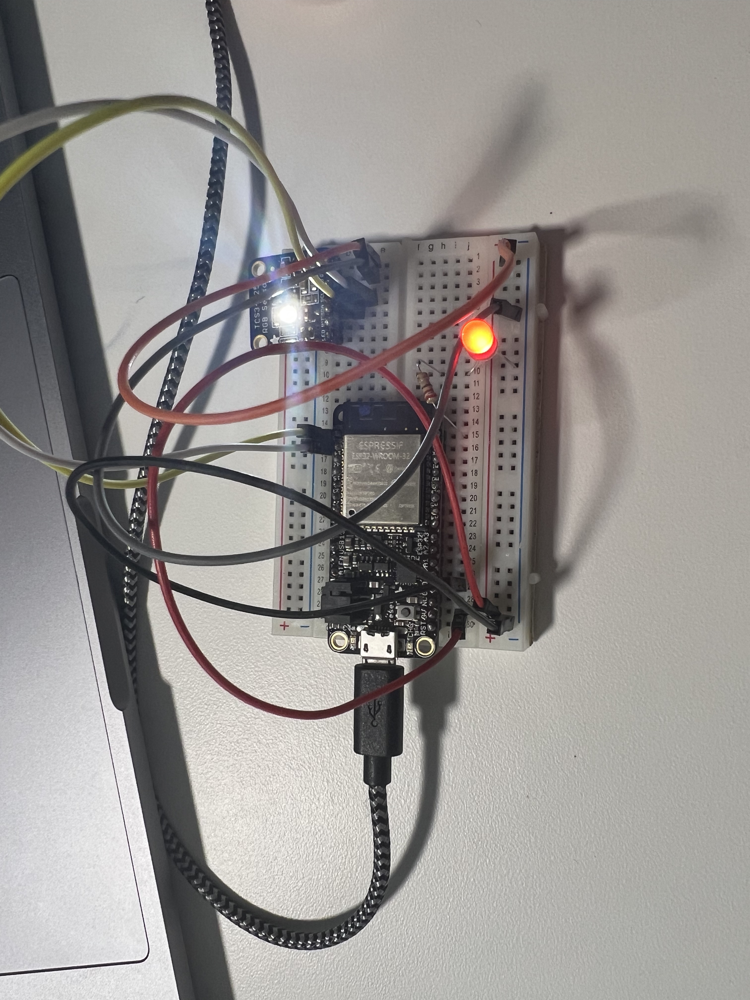
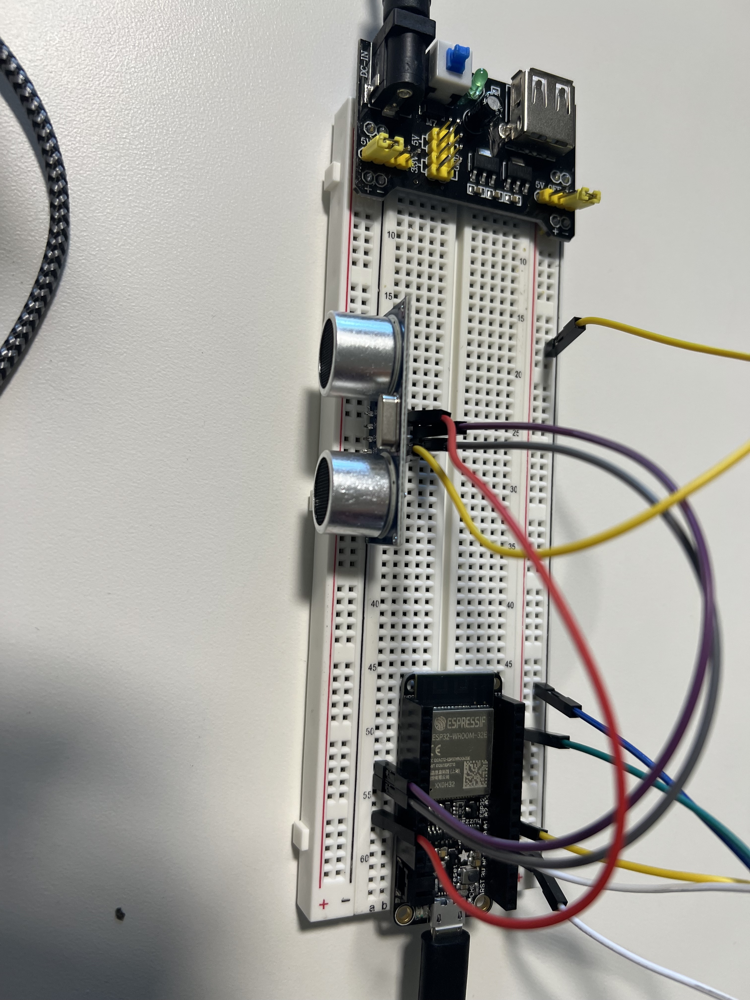
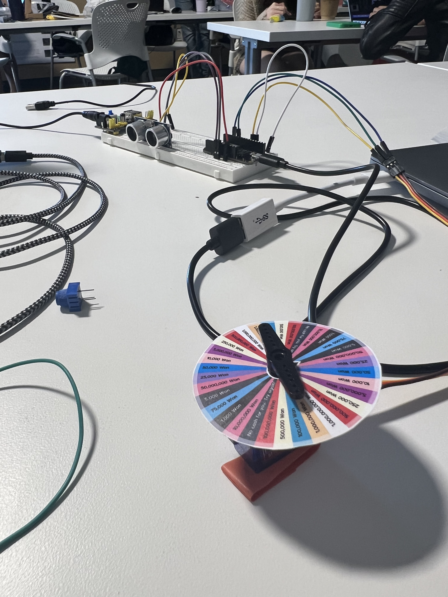

Our system involves two creatures, each with a distinct niche in regards
to their worldview.
Creature A's worldview revolves around light and color. Creature A sees
the world using an RGB sensor – it is constantly taking in information about
what colors lay in front of it. Given this worldview, Creature A loves
watching the hit television show, Wheel of Fortune. Look how many colors
are on that wheel! Creature A is also equipped with a small light that
it can control to express other information it receives. This light's
color has changed multiple times but as of now remains red.
Creature B's worldview revolves around distance and movement. Creature B
sees the world using an ultrasonic distance sensor – taking in information
about what lies in front of it and how it moves. Given this worldview,
Creature B loves watching the people who watch TV (not exclusively Wheel of
Fortune, but in this case, yes, that is the show being watched). When
the people move, Creature B takes note. Creature B is also equipped with
a servo motor (attached to a wheel similar to that on Wheel of Fortune). It
can spin the servo to express information it receives.
You can find images of these creatures below:



These creatures are communicating with each other through the ~cloud~ (in
particular, AdafruitIO). Creature A will tell B what colors it is seeing,
and Creature B will use that to spin its wheel to a matching angle.
Actually, that was a lie. Given the limits on data upload through AdafruitIO,
Creature A does the data processing itself as a favor to B. This way it can
send only one data point through the cloud rather than three. Creature A
takes the dominant color it is seeing (between red, green, and blue) and
maps its value to an angle between 0 and 180. A then sends this to B
for use on its wheel.
Fortunately, this isn't a one way street. Creature B is watching whoever
is watching tv, and communicating their distance through AdafruitIO to
Creature A. As the person moves, their distance changes and B records every
move. When A receives this distance information, it uses it to change the
brightness of its light, reflecting where the TV watcher is and how active
they are.
You can find a video of this process below:
This process was not without its complications. Creature B was employing
both the ultrasonic distance sensor and the servo motor, both of
which require 5 volts. We had both connected to the USB output of the
ESP32, which outputs 5v, but it likely wasn't producing enough power, as
the servo would turn just once and then stop. We added a power bridge,
and our system still wouldn't work. We eventually realized that the sensor
was probably receiving too much from the power bridge, and required only
the 5v pulse from the USB output. Upon disconnecting the sensor from the
power bridge, and reconnecting it to USB (while leaving the servo connected
to the bridge), we had data and movement! And yet, our light still wasn't
turning on. Due to some combination of either rate-limiting or network
overload, our data did not seem to be coming through. After the magic of
time, we recieved data through the cloud – it seemed our data was on a
delay of roughly a few minutes. While perplexing at first, the issues
resolved and we were able to see our working prototype!
Many thanks to my partner in this project, Ophelia, and debugging help
from Adit in the process.